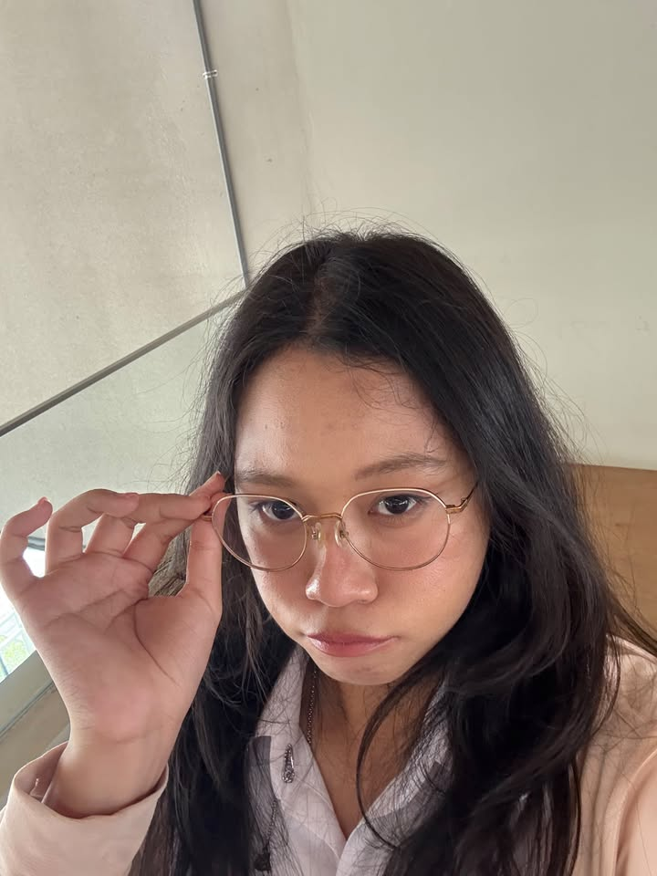
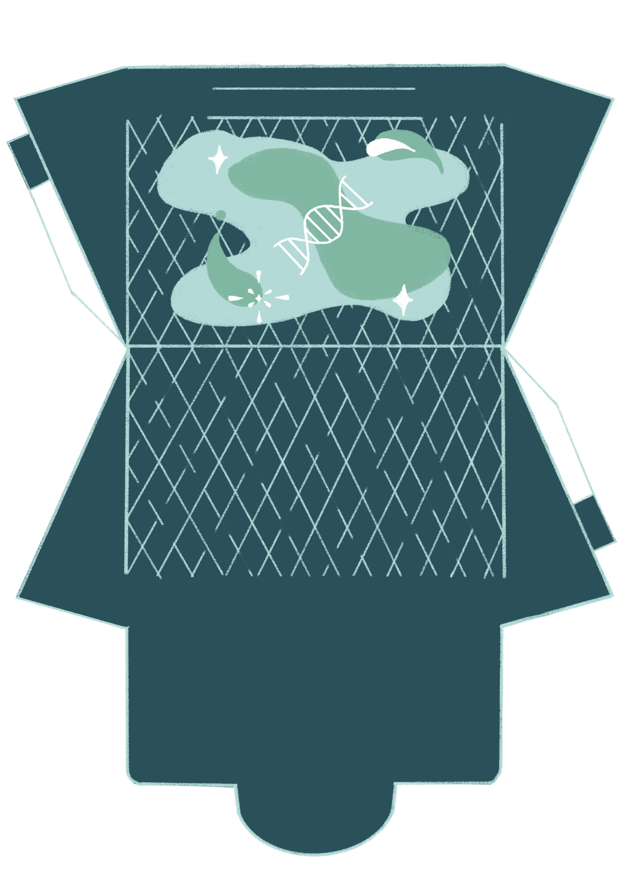
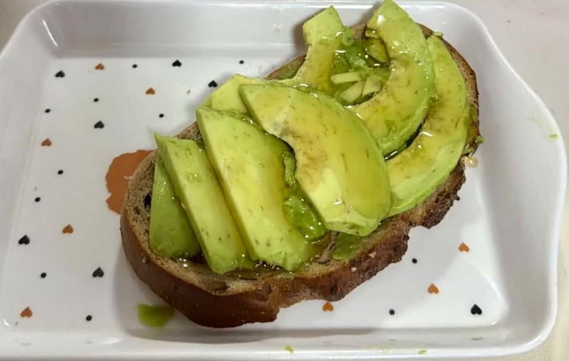
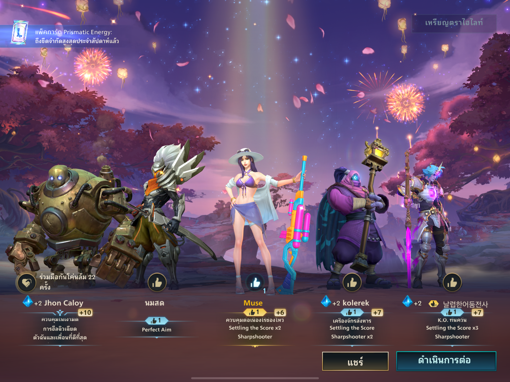

✦ Welcome, little traveler ✦
A little cozy world filled with food, creativity, nature and things I love.
Explore My World
✦ ABOUT ME ✦
I am a Food Science student at the School of Food Industry, KMITL.
I enjoy learning how science and creativity can come together through food. I am especially interested in food laboratory work, cooking and discovering new ideas.
Outside of studying, I enjoy drawing, painting, trying new recipes and playing games during my free time.
✦ MY SKILLS ✦
Some skills I have developed through studying Food Science and working in food laboratories.
I have experience performing food laboratory experiments, testing food properties, observing results and recording experimental data.
I have experience preparing food samples, using basic laboratory equipment and observing changes in food during processing.
✦ MY HOBBY ✦
These are some of my favorite things to do when I have free time.

I enjoy drawing and painting because they allow me to express my imagination, ideas and feelings through colors.

I enjoy cooking and experimenting with new menus. One of the dishes I made is sourdough avocado toast. Cooking lets me combine food science with creativity.

I enjoy playing Wild Rift during my free time. I like the teamwork, strategy and excitement of playing together with other players.
✦ CONTACT ✦
Thank you for visiting my little world. You can find me and see more of my life on Instagram.
♡ Instagram